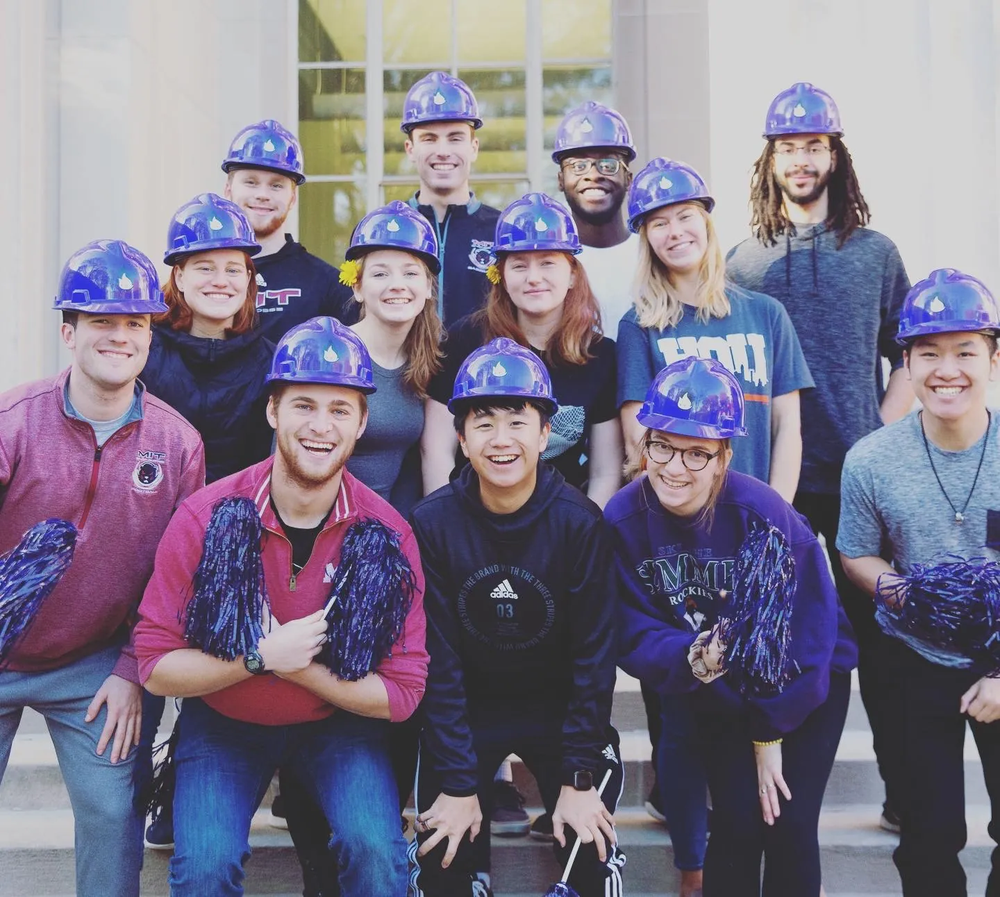
Project: Developed a substantive product prototype for a pipe freezing prevention system.
Course: MIT 2.009 (Product Engineering Processes). Undergraduate Mechanical Engineer capstone class. Students develop an understanding of product development phases and experience working in teams to design and construct high-quality product prototypes.
Collaborators: Albert Go, Alexandrine Obrand, Andrew Grise, Gabe Evans, Isaac Perper, Jameson Kief, Johnny Fung, Jonathan Sampson, Katie Henshaw, Leah Vogel, Margaret Kosten, Megan Ochalek, Nic Arons, Tessa Weiss, Thomas Allison, Thomas Nelson, Violet Killy, Zack Kopstein
Product Brochure | Final Presentation
Overview
For our capstone project, my team and I developed Triton — a consumer grade device that detects if your pipes are at risk of freezing, and in response automatically circulates water through your at-risk water lines while minimizing water waste. Our system reliably protects pipes from freezing in tempratures as low as -40 degrees F. We navigated the design process from ideation, multiple rounds of prototypes, and extensive testing, culminating in a live-audience presentation streamed to thousands of viewers.
Key Contributions
- Financial Officer
- Software and communication subteam
- Electronics circuit design, testing, and integration
- Testing and evaluation
Ideation
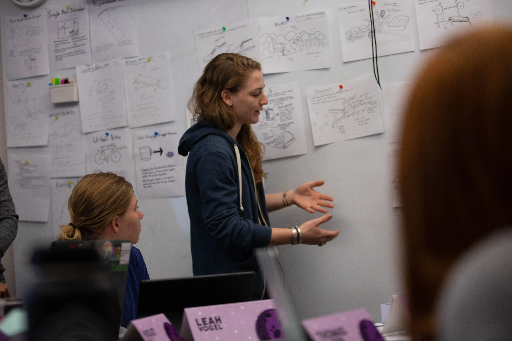
We narrowed down our potential products from dozens of initial concepts, to 6 promising ideas which we then narrowed down with a series of sketch model prototypes and presentations.

Sketch Models Round 1
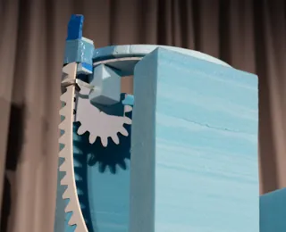
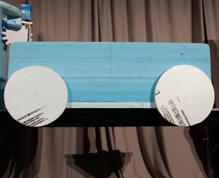
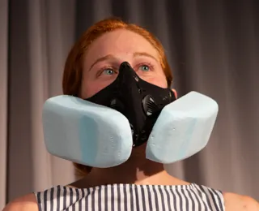
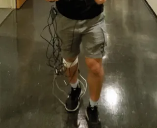
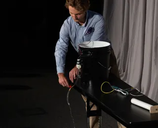
Sketch Models Round 2
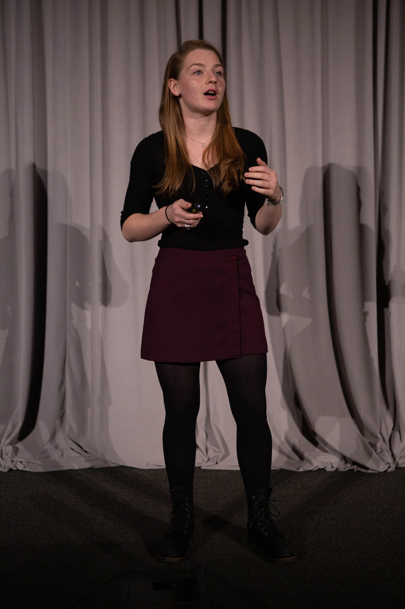
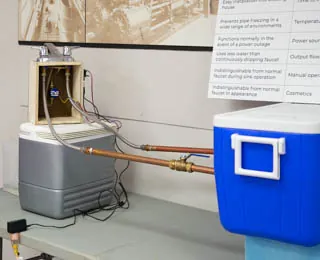
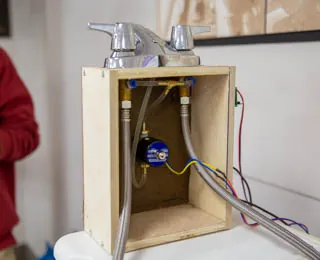
Market Research
We spoke with potential customers for each of our concepts to try and best understand the market and customer needs. After deciding to pursue our pipe freeze prevention system, we solidified that research into a customer contract to guide our final design process.
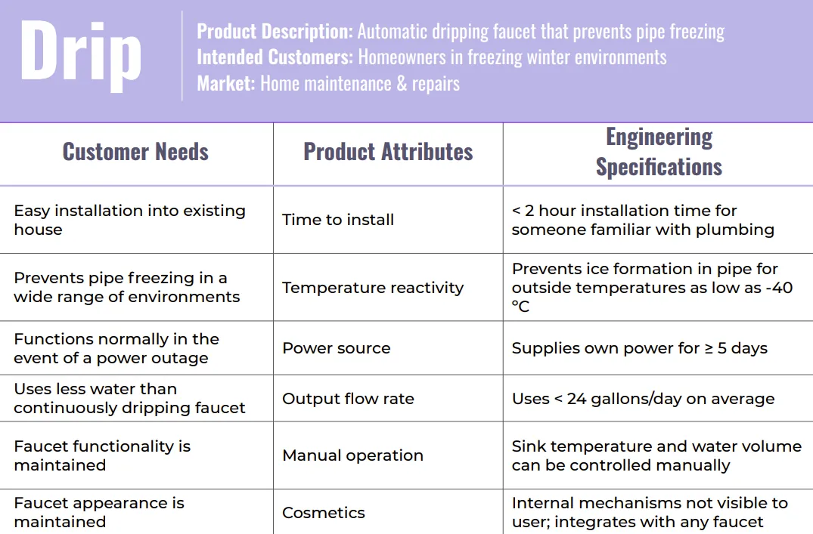
Many hours in the shop...
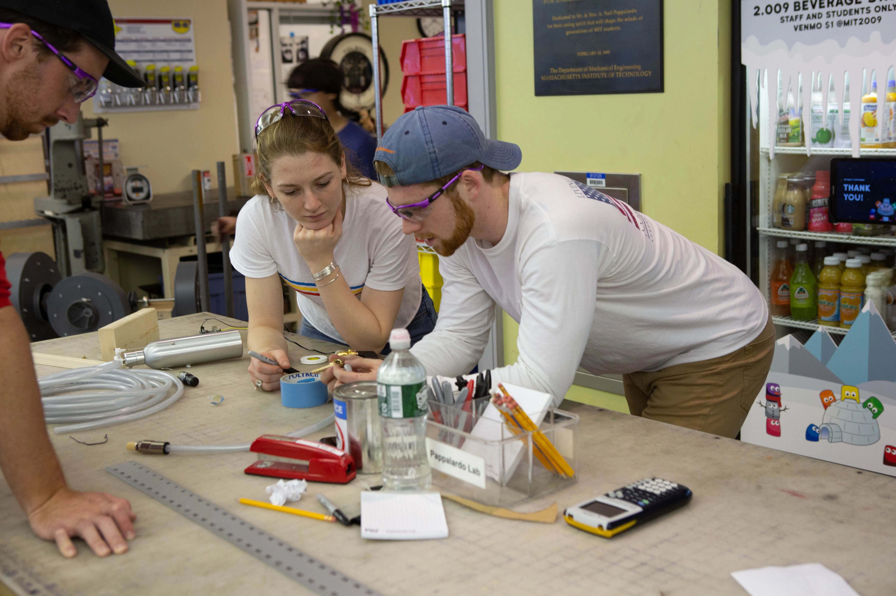
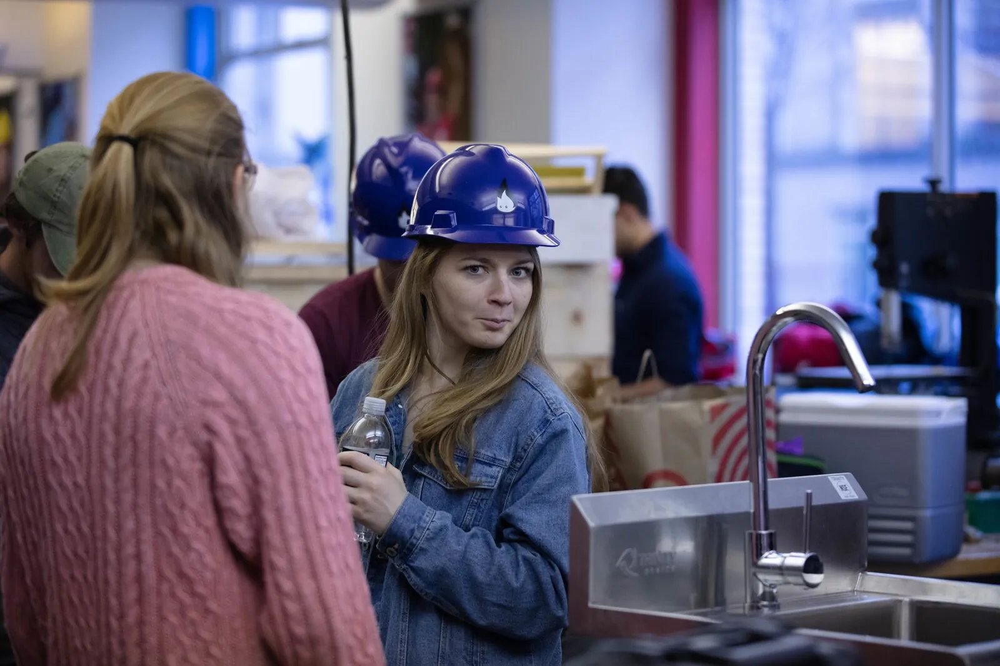
Electronics
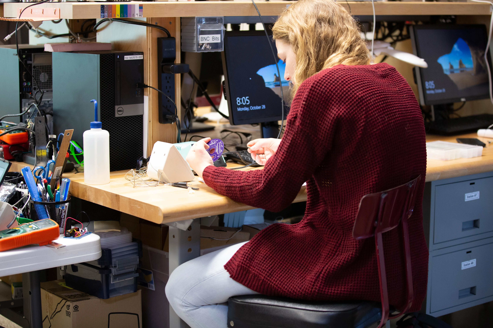

Final Design
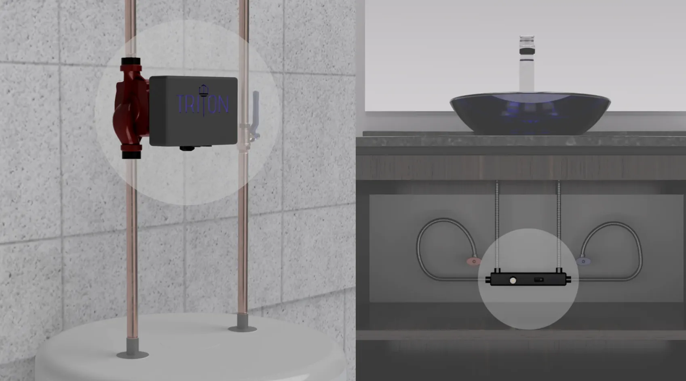
When the system has detected a freezing risk, it automatically circulates a small amount of water from the hot water line, through our bridge device, down the cold line, and back into the water heater. This small movement of water is enough to prevent pipes from freezing and potentially bursting. The system is broken down into two main modules — the Hub and the Bridge.
The Hub
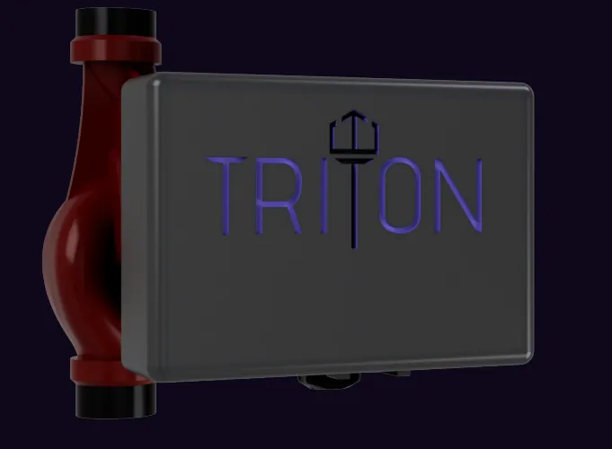
The Hub acts as the brain of the system, and consists of a centrifugal pump that mounts to the output of a water heater. The hub pulls local weather data to determine when and how much to cycle the system, based on an algorithm we developed through extensive research and testing. It also regularly caches upcoming forecasts to prevent disruption in case of power outage.
The Bridge
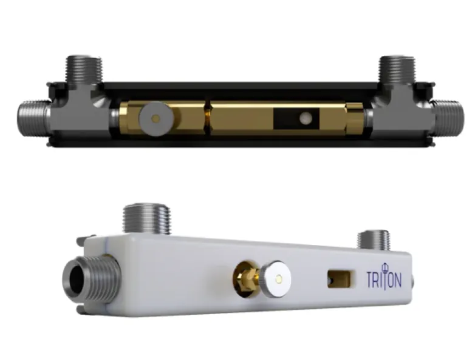
The Bridge is placed at the end of an at-risk water line, such as a bathroom faucet. It mounts directly to existing plumbing and uses a passive system consisting of a ball valve to move a small stream of water from the hot to the cold line.
iOS Application
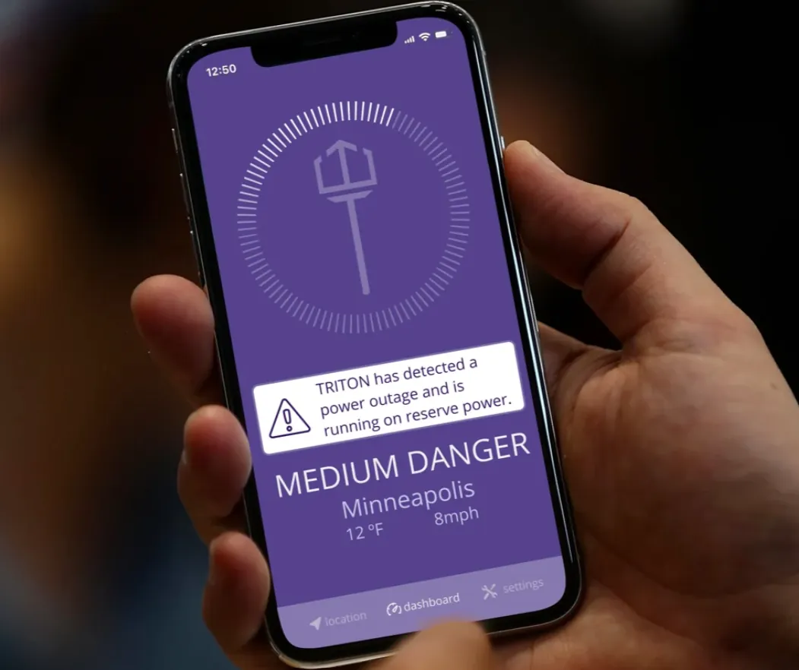
We also developed a companion app that allows users to remotely monitor device status and relevant local weather conditions.
Final Product
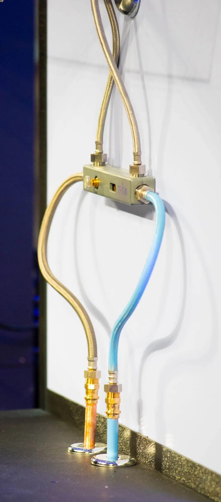
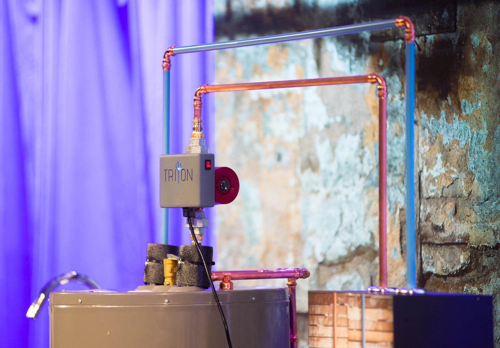
Copious Amount of Team Spirit
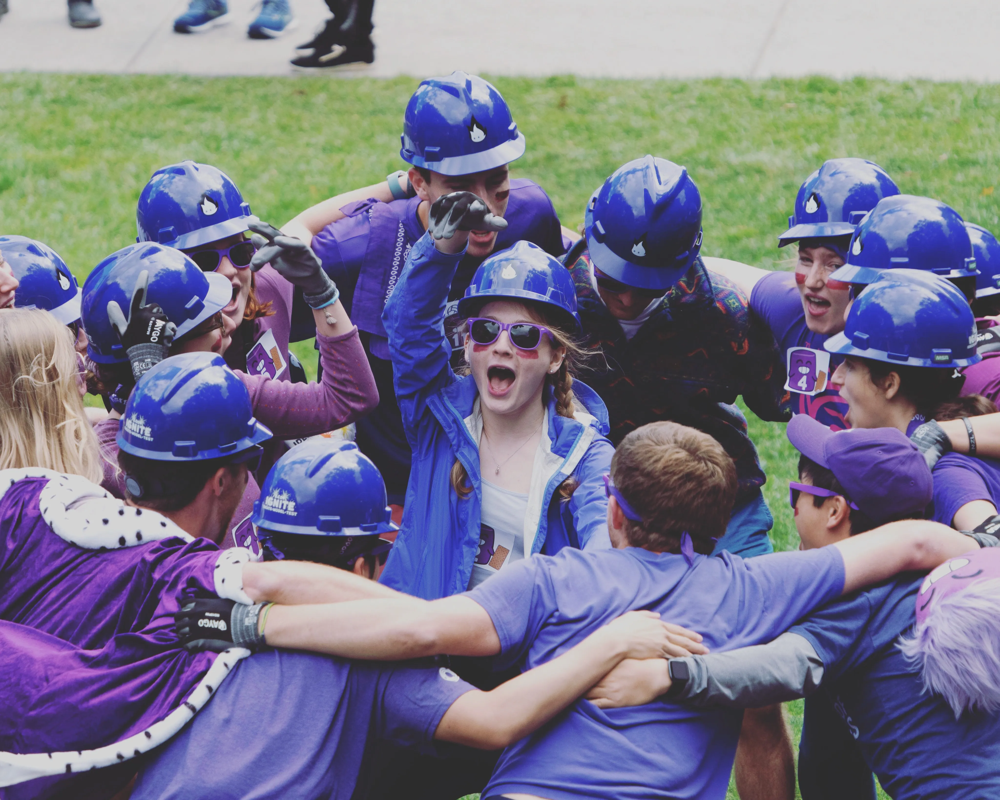
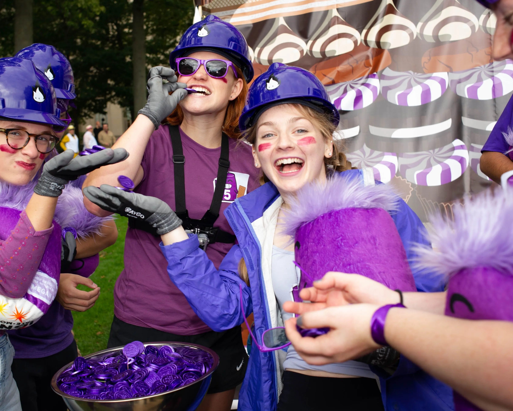